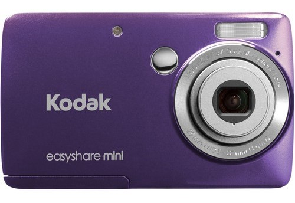
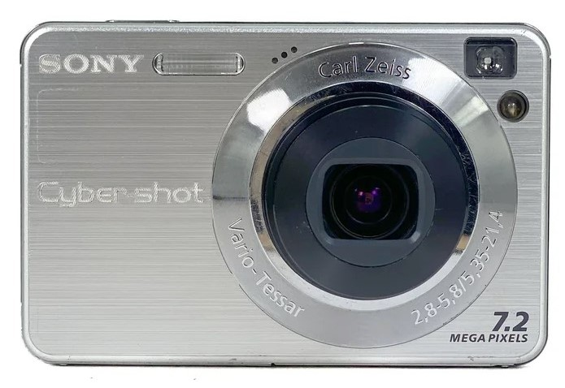
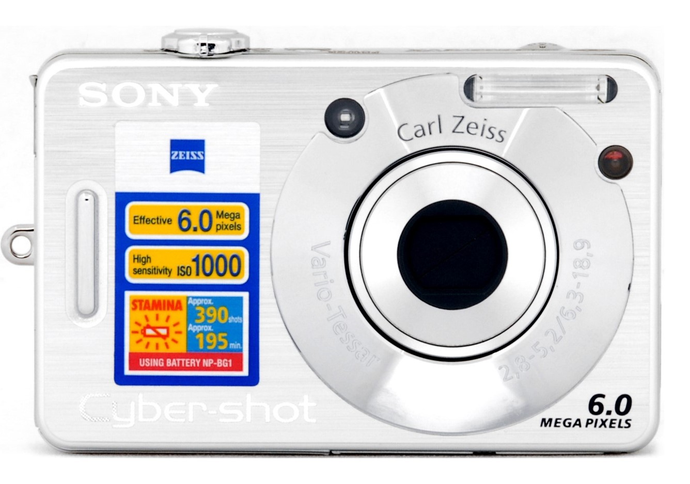

Acá te muestro las cámaras con las que he sacado algunas de mis fotos.

Kodak
Mi camara mas preciada. Me la regalo mi abuelo cuando tenia mas o menos 11 años, le había pertenecido a él y dentro todavía tenía algunas fotos de su viaje a Mendoza.

Sony CyberShot DSC-W110
Esta fue la primera camara que tuve, me la dieron mis papás cuando yo tenia aproximadamente 7 años. Me acompaño en mis primeros viajes junto a mi familia y es testigo de muchas fotos de una niña haciendo caras locas frente al lente.

Sony CyberShot DSC-W50
Esta camara me la dio mi madrina hace unos meses, un dia que estabamos revisando unos cajones. Ella me conto que esta camara la acompaño a un viaje que hizo por Europa hace unos años. Por el momento es la que mas uso ya que no tengo problemas co la bateria ni con el lente.